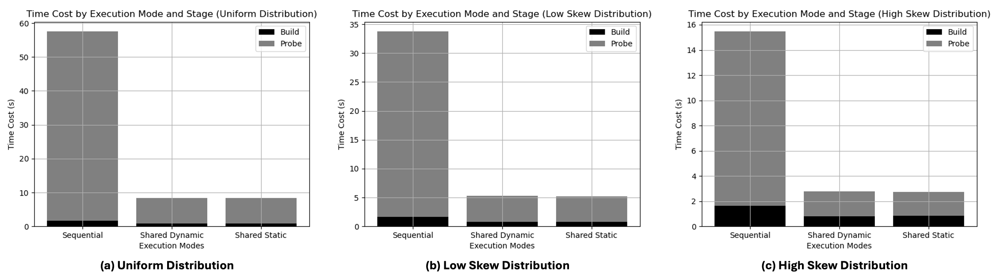
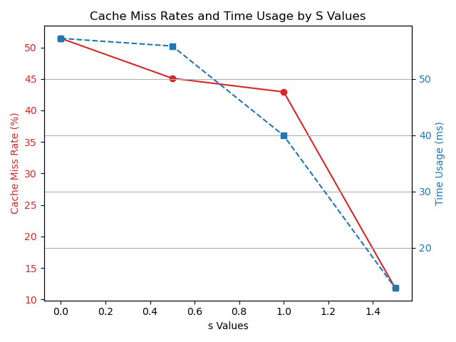
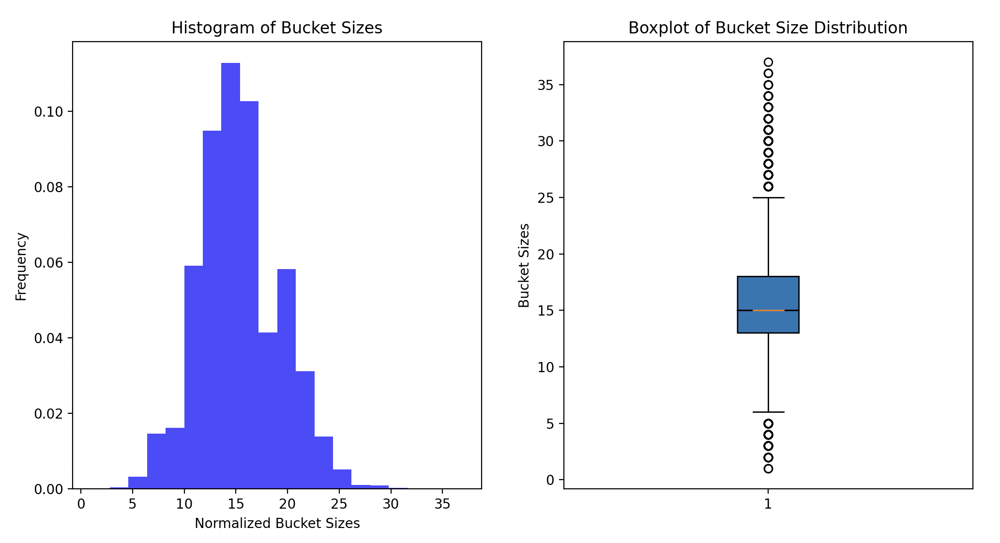

Authors: Zhidong Guo (zhidongg), Ye Yuan (yeyuan3)
We have implemented the sequential hash join and parallel shared hash join, where multiple threads build and probe a shared hash table. The parallel implementation supports both static and dynamic scheduling. We have set up the benchmark framework which enables us to generate workloads of varying skewness and measure the per-stage (partition, build, probe) execution time.
A preliminary comparison of these two implementations gives us the following observations:
For the remaining duration of the project, we will implement parallel partitioned hash join, where the tuples are partitioned into bottom-level-cache-sized chunks and joined locally, and perform a series of evaluation on synchronization cost, cache access, and workload distribution to figure out whether partitioning is beneficial for in-memory parallel hash join.
We have spent some time onboarding Rust language and frameworks. We have familiarized ourselves with the Rust syntax, data structures, and concurrency model. We have also explored various Rust libraries that might be useful for our project, including:
We have set up the benchmark infrastructure for different variants of the hash join.
/**
* Pesudo-code for the sequential hash join algorithm
* @param Table R: The smaller table to join
* @param Table S: The larger table to join
* @param Attribute R_key: The join attribute in table R
* @param Attribute S_key: The join attribute in table S
* @return Result: The joined table containing all matching rows
*/
func SequentialHashJoin(Table R, Table S, Attribute R_key, Attribute S_key):
// Step 1: Build phase
HashTable = {}
// Loop over each row in the smaller table
for each row in R:
hashKey = hash(row[R_key])
if hashKey not in HashTable:
HashTable[hashKey] = []
HashTable[hashKey].append(row)
// Step 2: Probe phase
Result = []
// Loop over each row in the larger table
for each row in S:
hashKey = hash(row[S_key])
if hashKey in HashTable:
for R_row in HashTable[hashKey]:
if R_row[R_key] == row[S_key]:
// Combine matching rows
joinedRow = join(R_row, row)
Result.append(joinedRow)
return Result
The parallel shared hash join is essentially the same as the sequential version, except that we split both tables
into chunks of data and let multiple threads process them in parallel. We compared the performance of implementing
the hash bucket with Mutex<Vec> and boxcar::Vec (lock-free vector), and found that
the former provides better performance. We also implemented static scheduling and dynamic scheduling to account for
the possible imbalance.
We are joining two relations \(R\) and \(S\), where \(|R| = 16000000\), \(|S| = 256000000\), and each tuple comes in the form of `(key, payload)`, where both `key` and `payload` takes up 8 bytes. The `key` column of the inner relation is its primary key (monotonically increasing integer sequence), while that of the outer relation is the foreign key following either
The figure below shows the performance comparison of three hash join variants under three workloads. The three variants are: sequential, shared hash table with static scheduling, and shared hash table with dynamic scheduling. The parallel hash joins are run with 8 threads. From this figure, we can see that under all workloads, the parallel variants reach a speedup of around 7.3x, and the probe phase dominates the execution time. This observation suggests that we should focus on optimizing the hash bucket's read performance.
From the figure above, we also found that for the sequential hash join, the high skew workload has a shorter execution time than the uniform workload. We hypothesize that high skewness in the data distribution may lead to better cache hit rate. The following plot illustrates the cache hit rate and probe phase execution time under various skew workloads. The data distribution follows the zipfian distribution \(f(r; s, N) = \frac{\frac{1}{r^s}}{\sum_{n=1}^N \frac{1}{n^s}}\), within which the factor \(s\) controls the skewness of the distribution. When \(s = 0\), the distribution is uniform, and as \(s\) increases, the distribution becomes more skewed.
From the figure above, we can see that the cache miss rate drops as the skewness of the data distribution increases. Also, the probe phase execution time decreases as the skewness increases. This observation suggests that the more skewed the data distribution is, the better the cache hit rate, and the shorter the probe phase execution time.
Another interesting observation is that xxhash introduces skewness to the hash bucket sizes even if the input is uniform. This implies that if partitioning also uses xxhash (with a different seed), the number of tuples in the partitions may be skewed.
Considering the progress we have made so far is on track with our initial plan, we will continue to work on the following goals for the final presentation:
| End Date | Task |
|---|---|
| 4-20 | Investigate the optimal implementation of partitioned variant |
| 4-24 | Implement partitioned hash join |
| 4-27 | Perform execution time comparison and synchronization cost evaluation |
| 4-30 | Perform cache evaluation |
| 5-5 | Report writing |